import pandas as pd
import numpy as np
import matplotlib.pyplot as plt
import seaborn as sns
from sklearn.cluster import KMeans
plt.rc('font', family = "Malgun Gothic", size = 13)
plt.rcParams['axes.unicode_minus'] = Falsedf = pd.read_excel('기상 데이터_홍로_일단위.xlsx', sheet_name = '전체')
df.columnsIndex(['지역', '연도', '과중(g)', '종경(mm)', '횡경(mm)', 'L/D 비율', '경도1(N/ø11mm)',
'경도2(N/ø11mm)', '경도평균', '당도(˚Brix)', '산도(%)', '착색(Hunter L)',
'착색(Hunter a)', '착색(Hunter b)', 'Latitude', 'Longitude', '광역자치단체'],
dtype='object')df2 = df[['지역', '연도', 'L/D 비율', '당도(˚Brix)', '산도(%)', '착색(Hunter a)', '광역자치단체']]
df2.columns = ['지역', '연도', 'LD 비율', '당도', '산도', '착색(Hunter a)', '광역자치단체']
df2| 지역 | 연도 | LD 비율 | 당도 | 산도 | 착색(Hunter a) | 광역자치단체 | |
|---|---|---|---|---|---|---|---|
| 0 | 김제 | 2015 | 1.040000 | 14.60 | 0.190000 | 24.1000 | 전라북도 |
| 1 | 김제 | 2016 | 0.950000 | 15.30 | 0.190000 | 21.0000 | 전라북도 |
| 2 | 군위 | 2016 | 0.911701 | 16.12 | 0.227353 | 9.1670 | 경상북도 |
| 3 | 군위 | 2016 | 0.916667 | 16.08 | 0.194300 | 13.3550 | 경상북도 |
| 4 | 군위 | 2016 | 0.958162 | 17.10 | 0.184473 | 10.4040 | 경상북도 |
| ... | ... | ... | ... | ... | ... | ... | ... |
| 105 | 화성 | 2022 | 0.981791 | 12.55 | 0.260046 | 8.6235 | 경기도 |
| 106 | 완주 | 2022 | 0.944600 | 13.39 | 0.262278 | 10.8375 | 전라북도 |
| 107 | 완주 | 2022 | 0.938330 | 13.23 | 0.246774 | 14.5505 | 전라북도 |
| 108 | 완주 | 2022 | 0.928727 | 13.50 | 0.264610 | 4.6535 | 전라북도 |
| 109 | 완주2 | 2022 | 0.910000 | 13.40 | 0.250000 | 9.4000 | 전라북도 |
110 rows × 7 columns
data = df2.loc[:, 'LD 비율':'착색(Hunter a)']
data| LD 비율 | 당도 | 산도 | 착색(Hunter a) | |
|---|---|---|---|---|
| 0 | 1.040000 | 14.60 | 0.190000 | 24.1000 |
| 1 | 0.950000 | 15.30 | 0.190000 | 21.0000 |
| 2 | 0.911701 | 16.12 | 0.227353 | 9.1670 |
| 3 | 0.916667 | 16.08 | 0.194300 | 13.3550 |
| 4 | 0.958162 | 17.10 | 0.184473 | 10.4040 |
| ... | ... | ... | ... | ... |
| 105 | 0.981791 | 12.55 | 0.260046 | 8.6235 |
| 106 | 0.944600 | 13.39 | 0.262278 | 10.8375 |
| 107 | 0.938330 | 13.23 | 0.246774 | 14.5505 |
| 108 | 0.928727 | 13.50 | 0.264610 | 4.6535 |
| 109 | 0.910000 | 13.40 | 0.250000 | 9.4000 |
110 rows × 4 columns
data2 = data
data2| LD 비율 | 당도 | 산도 | 착색(Hunter a) | |
|---|---|---|---|---|
| 0 | 1.040000 | 14.60 | 0.190000 | 24.1000 |
| 1 | 0.950000 | 15.30 | 0.190000 | 21.0000 |
| 2 | 0.911701 | 16.12 | 0.227353 | 9.1670 |
| 3 | 0.916667 | 16.08 | 0.194300 | 13.3550 |
| 4 | 0.958162 | 17.10 | 0.184473 | 10.4040 |
| ... | ... | ... | ... | ... |
| 105 | 0.981791 | 12.55 | 0.260046 | 8.6235 |
| 106 | 0.944600 | 13.39 | 0.262278 | 10.8375 |
| 107 | 0.938330 | 13.23 | 0.246774 | 14.5505 |
| 108 | 0.928727 | 13.50 | 0.264610 | 4.6535 |
| 109 | 0.910000 | 13.40 | 0.250000 | 9.4000 |
110 rows × 4 columns
data2 = data
for col in data.columns:
Kmean = KMeans(n_clusters = 3)
data2 = data2.drop(columns = [col])
for col2 in data2.columns:
pred = Kmean.fit_predict(data[[f'{col}', f'{col2}']])
center = Kmean.cluster_centers_
plt.figure(figsize = (10, 10))
sns.scatterplot(data = df2, x = f'{col}', y = f'{col2}',
c = pred, hue = '지역', style = '연도', s = 100, palette = "tab10")
plt.scatter(x = center[:, 0], y = center[:,1], c = 'yellow', edgecolor = 'black', s = 120,)
plt.xlabel(f'{col}', fontsize = 15)
plt.ylabel(f'{col2}', fontsize = 15)
plt.savefig(f'{col}_{col2}')
plt.show()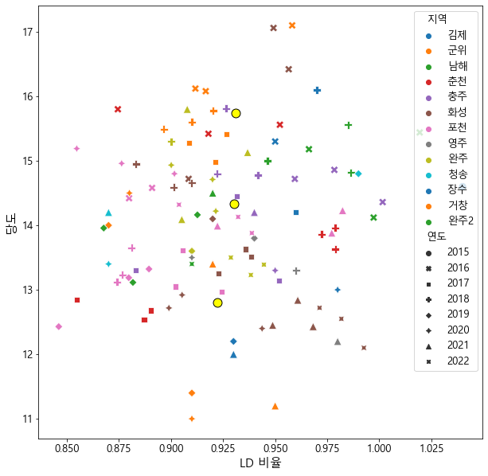
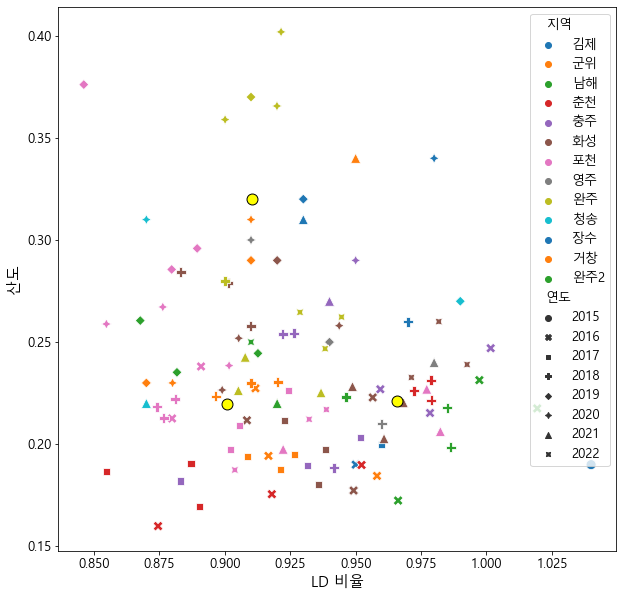
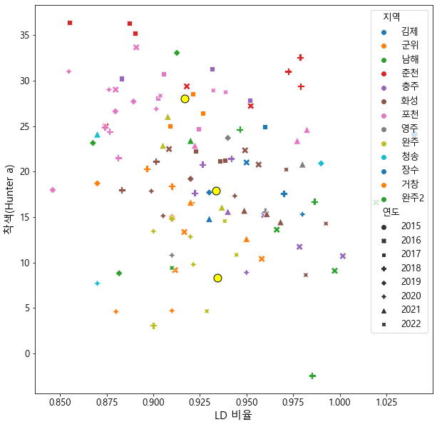
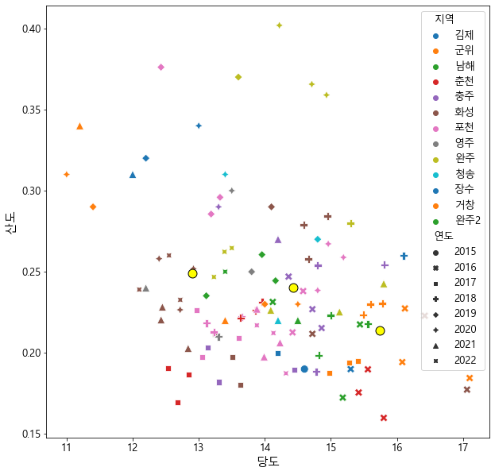
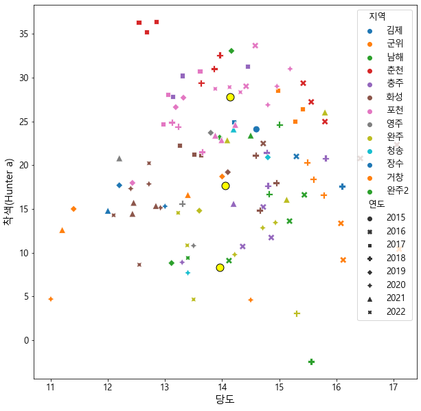
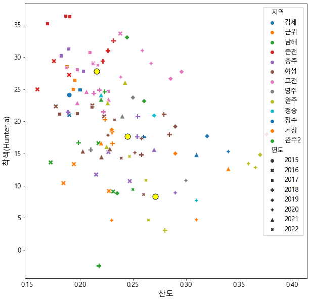
data2 = data
for col in data.columns:
Kmean = KMeans(n_clusters = 3)
data2 = data2.drop(columns = [col])
for col2 in data2.columns:
pred = Kmean.fit_predict(data[[f'{col}', f'{col2}']])
center = Kmean.cluster_centers_
plt.figure(figsize = (10, 10))
sns.scatterplot(data = df2, x = f'{col}', y = f'{col2}',
c = pred, hue = '광역자치단체', style = '연도', s = 200, palette = "tab10")
# plt.scatter(x = center[:, 0], y = center[:,1], c = 'yellow', edgecolor = 'black', s = 200,)
plt.xlabel(f'{col}', fontsize = 15)
plt.ylabel(f'{col2}', fontsize = 15)
plt.savefig(f'{col}_{col2}')
plt.show()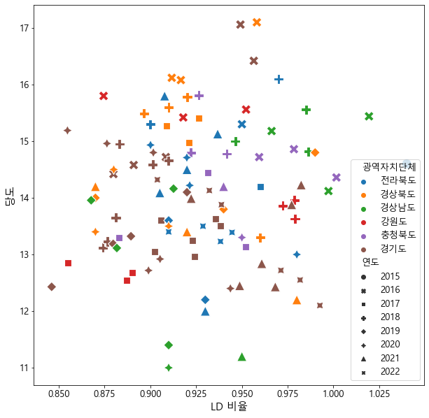
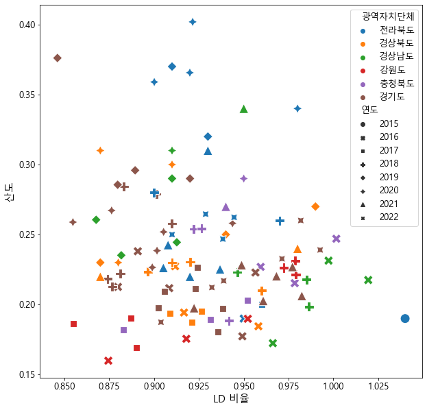
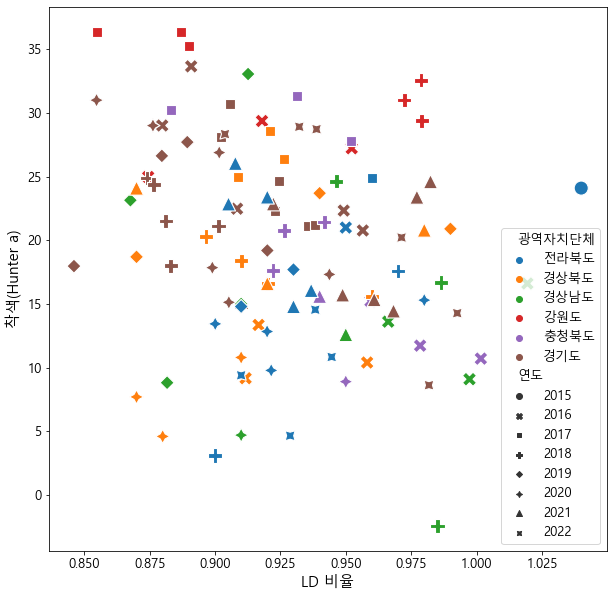
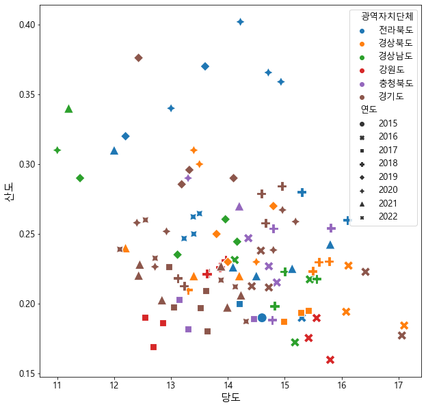
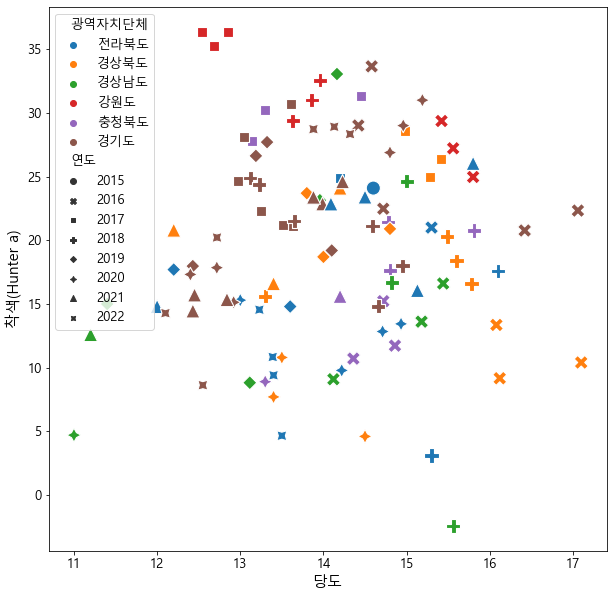
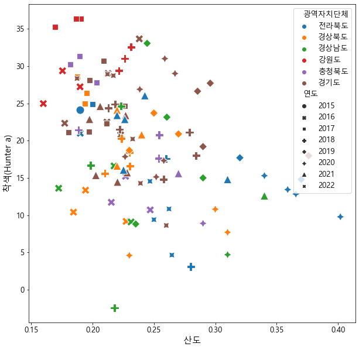
data2 = data
idx = 1
plt.figure(figsize = (18, 60))
for col in data.columns:
Kmean = KMeans(n_clusters = 3)
data2 = data2.drop(columns = [col])
for col2 in data2.columns:
pred = Kmean.fit_predict(data[[f'{col}', f'{col2}']])
center = Kmean.cluster_centers_
plt.subplot(6, 2, idx)
sns.scatterplot(data = df2, x = f'{col}', y = f'{col2}',
c = pred, hue = '광역자치단체', s = 100, palette = "tab10")
plt.scatter(x = center[:, 0], y = center[:,1], c = 'yellow', edgecolor = 'black', s = 120,)
plt.subplot(6, 2, idx + 1)
sns.scatterplot(data = df2, x = f'{col}', y = f'{col2}',
c = pred, hue = '연도', s = 100, palette = "tab10")
plt.scatter(x = center[:, 0], y = center[:,1], c = 'yellow', edgecolor = 'black', s = 120,)
plt.xlabel(f'{col}')
plt.ylabel(f'{col2}')
# plt.savefig(f'{col}_{col2}')
idx += 2
plt.show()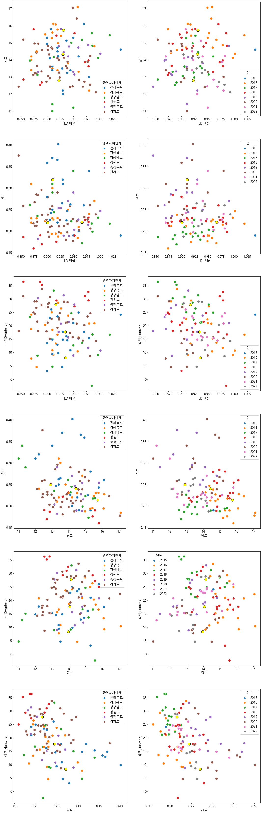
df2[df['지역'] == "남해"]| 지역 | 연도 | LD 비율 | 당도 | 산도 | 착색(Hunter a) | 광역자치단체 | |
|---|---|---|---|---|---|---|---|
| 5 | 남해 | 2016 | 0.966226 | 15.180000 | 0.172413 | 13.612000 | 경상남도 |
| 6 | 남해 | 2016 | 0.997289 | 14.120000 | 0.231373 | 9.090000 | 경상남도 |
| 7 | 남해 | 2016 | 1.019423 | 15.440000 | 0.217527 | 16.608000 | 경상남도 |
| 49 | 남해 | 2018 | 0.985071 | 15.560000 | 0.217884 | -2.443000 | 경상남도 |
| 50 | 남해 | 2018 | 0.986352 | 14.820000 | 0.198467 | 16.690500 | 경상남도 |
| 51 | 남해 | 2018 | 0.946374 | 15.000000 | 0.223177 | 24.638000 | 경상남도 |
| 65 | 남해 | 2019 | 0.912655 | 14.162500 | 0.244483 | 33.058125 | 경상남도 |
| 66 | 남해 | 2019 | 0.881694 | 13.114286 | 0.235189 | 8.817143 | 경상남도 |
| 67 | 남해 | 2019 | 0.867660 | 13.957143 | 0.260534 | 23.147143 | 경상남도 |
data2 = data
idx = 1
plt.figure(figsize = (18, 60))
for col in data.columns:
Kmean = KMeans(n_clusters = 3)
data2 = data2.drop(columns = [col])
for col2 in data2.columns:
pred = Kmean.fit_predict(data[[f'{col}', f'{col2}']])
center = Kmean.cluster_centers_
plt.subplot(6, 2, idx)
sns.scatterplot(data = df2, x = f'{col}', y = f'{col2}',
c = pred, hue = '지역', s = 100, palette = "tab10")
# plt.scatter(x = center[:, 0], y = center[:,1], c = 'yellow', edgecolor = 'black', s = 120,)
plt.subplot(6, 2, idx + 1)
sns.scatterplot(data = df2, x = f'{col}', y = f'{col2}',
c = pred, hue = '연도', s = 100, palette = "tab10")
# plt.scatter(x = center[:, 0], y = center[:,1], c = 'yellow', edgecolor = 'black', s = 120,)
plt.xlabel(f'{col}')
plt.ylabel(f'{col2}')
# plt.savefig(f'{col}_{col2}')
idx += 2
plt.show()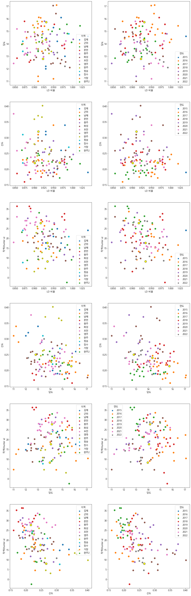
plt.rc('font', family = "Malgun Gothic", size = 13)
plt.rcParams['axes.unicode_minus'] = False
Kmean = KMeans(n_clusters = 3)
pred = Kmean.fit_predict(df2[['산도', '당도']])
center = Kmean.cluster_centers_
plt.figure(figsize = (10, 10))
sns.scatterplot(data = df2, x = '산도', y = '당도', c = pred,
hue = '연도', style = '지역', palette = 'tab10', s = 100)
plt.scatter(x = center[:, 0], y = center[:,1], c = 'yellow', edgecolor = 'black', s = 120,)
plt.xlabel('산도')
plt.ylabel('당도')
plt.savefig('산도_당도')
plt.show()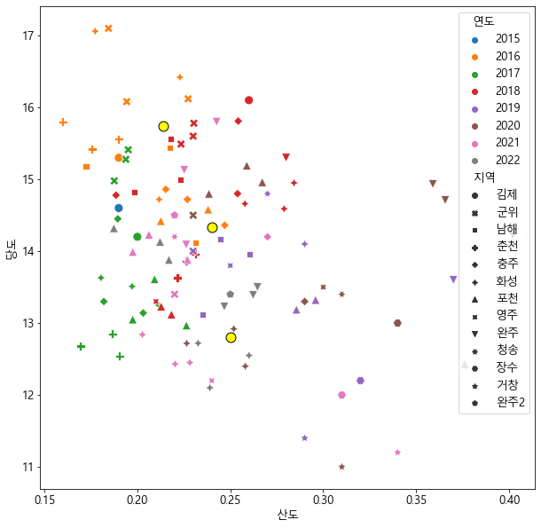